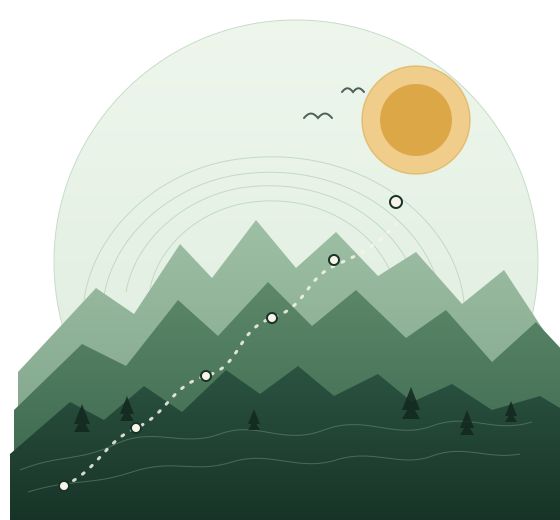
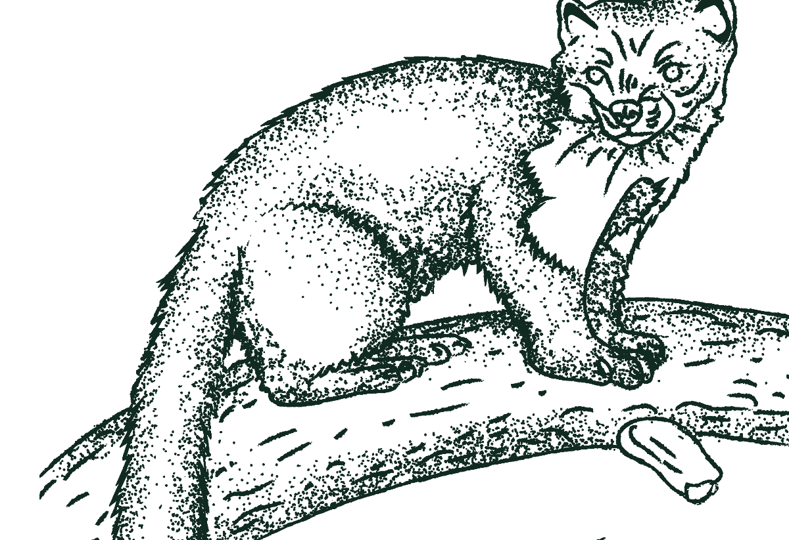

Regionalni park · Moslavačka gora
Gora koja je nastala na dodiru dviju ploča.
Prije 83 milijuna godina ovdje se skrutnula granitna magma. Danas Moslavačka gora čuva tri kata šume, potok Kamenjača, ostatke pavlinskog samostana i priču o moru koje se povuklo. Istraži je — sloj po sloj.

Zašto je posebna
Usamljena gora, neobična povijest
Moslavina je kraj između Lonje na jugu i zapadu, Česme na sjeveru i Ilove na istoku. U njezinu središtu izdiže se Moslavačka gora — usamljena, šumovita uzvisina koja se ne može zamijeniti ni s jednom drugom hrvatskom gorom.
Njezina vrijednost nije samo u visini. Gora je izdanak Savske suturne zone, kontaktnog područja Europske i Jadranske ploče. Zato su ovdje na malom prostoru spojeni graniti, metamorfne stijene, sedimenti, naftna ležišta i tragovi života iz vremena kada je gorom plovilo more.
Od 2011. godine Moslavačka gora je regionalni park — drugo takvo zaštićeno područje u Hrvatskoj.
Zapis u kamenu
„Stijene koje danas nalazimo na površini nisu samo izvor informacija o prošlosti — one su i vrijedni resursi kojima se koristimo u svakodnevnom životu.“
Nataša Mravunac, „Moslavina — iz geološke perspektive“, Zbornik Moslavine XIX
Četiri priče
Od granita do grane
Svaki dio gore priča svoju priču. Odaberi odakle želiš početi.
Gora između ploča
Granit star 83 milijuna godina, gabro iz davnog oceana, rasjedi koji su oblikovali kraj.
Otvori BioraznolikostŠuma u tri kata
242 biljne i 155 životinjskih vrsta — od zimzelena i paprati do jelena, kune i crne rode.
Otvori PovijestKamenje pamti ljude
Pavlinski samostan Bela crkva, srednjovjekovne utvrde i tragovi stariji od pisane riječi.
Otvori StazaCrkveni jarak
7,5 km, 12 stajališta i potok koji neumorno oblikuje kristalne stijene.
OtvoriStaza Crkveni jarak
Potok koji pobjeđuje upornošću
„U sukobu potoka i stijene, potok uvijek pobjeđuje. Ali ne zbog snage, već zbog upornosti.“ Ta rečenica sa staze dobro opisuje i njezin krajolik: duboki jarak, slapove, kamene blokove i šumu koja se penje do vrha.

Igre
Provjeri što si naučio
Četiri kviza i križaljka. Bez vremenskog pritiska, s objašnjenjem nakon svakog odgovora — pogriješiti je dopušteno.
Stijene
KvizGranit, gabro, rasjedi i duboko vrijeme.
Biljke
KvizOd zimzelena i paprati do bukve i hrasta.
Životinje
KvizJelen, kuna, jelenak i ptice duboke šume.
Zanimljivosti
Da / neProvjeri što je istina, a što lijepa legenda.
Križaljka
Igra16 pojmova iz geologije, šume i povijesti.
Uskoro
NovoIgre pamćenja, povezivanja i terenske potrage — u pripremi.
Za škole i terensku nastavu
Portal prati poučnu stazu Crkveni jarak i može poslužiti kao priprema ili završni zadatak nakon posjeta. Sadržaji su pisani na temelju znanstvenih i stručnih izvora — popis je na stranici Izvori.